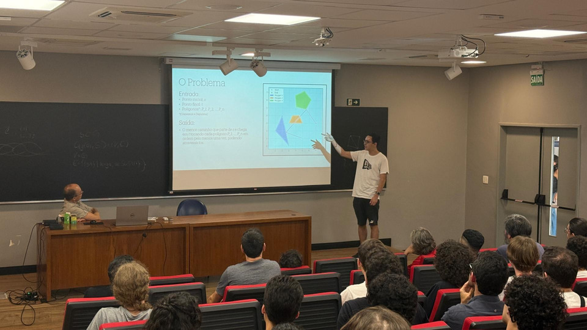
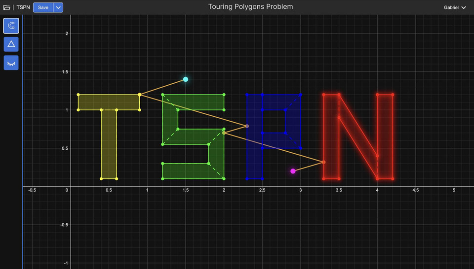
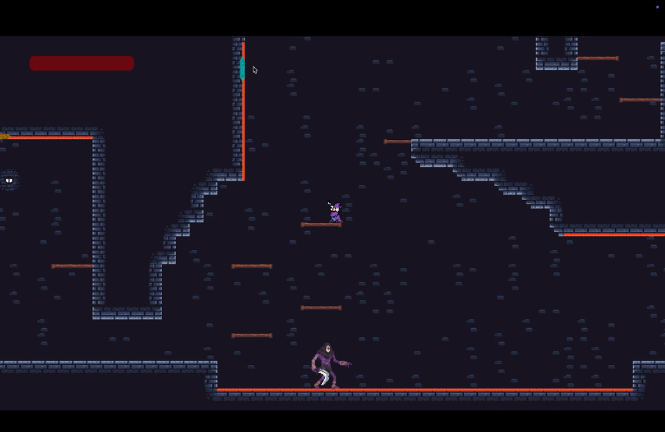
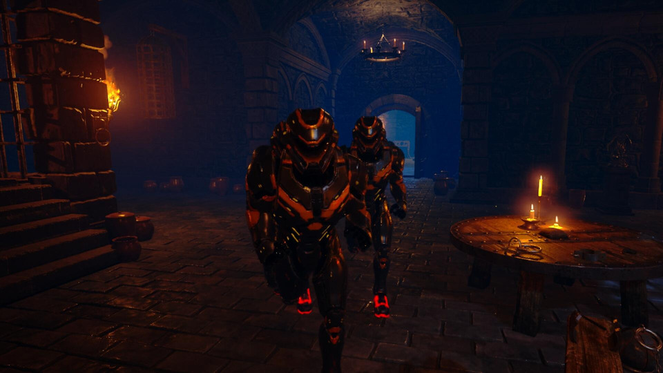

about
Third-year Computer Science student at IME-USP. I'm deeply interested in algorithms, computational geometry, optimization, programming languages, and the intersection between mathematical theory and software engineering.
My current research focuses on the Touring Polygons Problem, a geometric optimization problem related to the Traveling Salesman Problem where regions are polygons and visitation order is fixed. The project is funded by FAPESP and involves techniques from computational geometry, nonlinear optimization, second-order cone programming, mixed-integer optimization, combinatorial optimization, and Branch and Bound methods.
Beyond research, I enjoy competitive programming and game development. I'm a top 100 global user on Codewars and top 30 worldwide in Python, and I enjoy exploring programming languages ranging from low-level x86 assembly to esoteric languages like Brainfuck. I like building systems that make abstract ideas tangible — from optimization visualizers and geometry tools to physics-based games and interactive simulations.
Computational Geometry Optimization Competitive Programming Game Development Programming Languages Algorithms Scientific Computing Python C++research
Touring Polygons Problem
FAPESP Undergraduate Research · Jul 2024 – present
Given a sequence of polygons in the plane, find the shortest path that visits each one in order. The project combines computational geometry, point location data structures, and optimization methods including LP, SOCP, NLP, and Branch and Bound. Presented at SIICUSP 34.

Teaching Assistant — Nonlinear Optimization
IME-USP
Assisting students in the Nonlinear Optimization course at IME-USP. Topics include: unconstrained optimization (Cauchy, Newton, Quasi-Newton methods), globalization strategies (line search, trust regions), and constrained optimization with equality and inequality constraints (active set methods, optimality conditions, penalty methods).
projects
Touring Polygons — Interactive Visualizer
↗ open demoAn interactive web visualizer for the Touring Polygons Problem. Draw a sequence of polygons on a canvas and watch the shortest visiting path computed in real time — bridging research and intuition through live geometric feedback. Built with Python/FastAPI and JavaScript.

Portal 2D
Project Lead2D recreation of Portal built in Godot over 4 months as part of a USP extension group. Led the project as main developer — handling core mechanics, portal physics, and team coordination.

Futuristic Dungeon Crawler
Unreal Engine3D dungeon crawler developed in Unreal Engine as part of a university course. Handled 3D modeling, asset sourcing, map building, enemy AI behavior, and combat systems.

contact